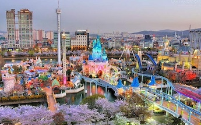
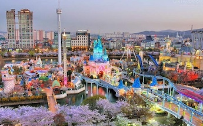
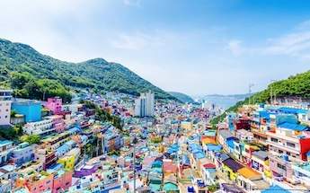
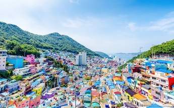

South Korea has always held a special place in my heart, and it's not just because of the amazing attractions and mouthwatering food—though those are definitely huge draws! Exploring the lively streets of Seoul or soaking in the natural beauty of Jeju Island always fills me with excitement and wonder. And let's not forget about the food! Korean cuisine is a delightful journey in itself, from the delicious flavors of bibimbap to the bold tanginess of kimchi. But what really gets my taste buds dancing is the street food scene. There's nothing quite like strolling through the markets, sampling everything from crispy pancakes to spicy rice cakes—it's a treat for the senses! Beyond the sights and flavors, there's so much to experience in South Korea. Whether it's discovering ancient palaces, hiking through breathtaking landscapes, or diving into the latest K-pop trends, there's never a dull moment. But what truly makes South Korea feel like home to me is the time spent with my family. Laughing, sharing stories, and simply enjoying each other's company against the backdrop of this vibrant country—it's moments like these that make every visit unforgettable.
 


 
